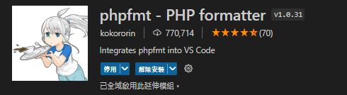
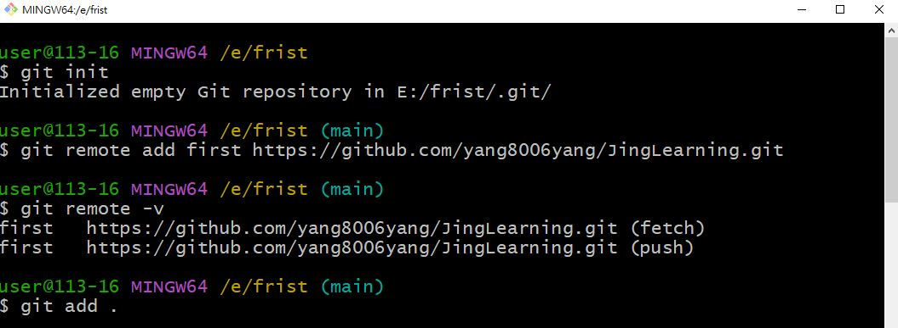

- lorem +要的數量>>enter =假資料
VSCode 擴充

- 
VS Code's HOT KEY
- !+tab 跑出開頭結構
- ctrl+/ 跑出註解
- ALT+ 左鍵= 游標多選
- CTRL+D 選取我要的單字
- CTRL +左右=快速切換單字
- CTRL+SHIFT+F 格式化文件 for排版文字
- SHIFT+ HOME/ SHIFT+END 全選那行
- ALT + 上下 移動那行文字
- CRTL+D 選擇同樣的單字
GIT
Push To Github
- git pull 遠端節點名稱 遠端分支名稱 - 把專案從遠端的倉庫拉回來
- git push 遠端節點名稱 本地分支名稱 - 把專案推送到遠端的倉庫去
-
從0開始
Step1. github >> Create a new repository

Step2.將專案push上去

Step3. DONE
-
已有遠端檔案
Step1. github >> Create a new repository
裡面會已經有個 readme.md
Step2.將遠端專案pull下來>add+commit好再push

Step3. DONE
**遠端的檔案全都不要>> push -f
遠端檔案會全部被本地端的覆蓋掉